Dossier de projet
Plateforme de mise en relation entre les particuliers
et les artisans de la région Auvergne-Rhône-Alpes
Devoir bilan
Titre professionnel Développeur Web et Web Mobile
Kévin Reis
Août 2026
La Région Auvergne-Rhône-Alpes est une collectivité territoriale qui couvre douze départements du quart sud-est de la France. Elle dispose de bureaux à Lyon et à Clermont-Ferrand ; le projet est suivi par l'antenne lyonnaise.
L'artisanat occupe une place déterminante sur ce territoire : près d'un tiers des entreprises de la région relèvent de ce secteur, soit environ 221 000 entreprises recensées en 2021. C'est l'une des régions les plus artisanales de France, et la collectivité souhaite entretenir cette dynamique. La création de la plateforme « Trouve ton artisan » répond directement à cette ambition.
La Région souhaite une plateforme qui permette à un particulier de trouver un artisan de son territoire, puis de le contacter facilement pour obtenir un renseignement, une prestation ou un tarif, au moyen d'un formulaire de contact.
Le besoin se décompose en trois volets :
Deux règles de gestion encadrent les données :
| Nature | Contrainte | Conséquence sur le projet |
|---|---|---|
| Accessibilité | Site accessible à tous, y compris aux personnes âgées et en situation de handicap. Conformité à la norme WCAG 2.1. | Contrastes vérifiés, navigation clavier complète, libellés explicites, structure sémantique, lien d'évitement. |
| Ergonomie | Conception mobile first, fonctionnement optimal sur toutes les tailles d'écran. | Feuilles de style écrites du plus petit écran vers le plus grand, points de rupture en min-width uniquement. |
| Sécurité | Point important pour une collectivité. Accès à l'API restreint à l'application. | Voir la partie 4, consacrée entièrement à ce sujet. |
| Identité visuelle | Cohérence avec l'environnement numérique de la Région. Police Graphik, palette et logo imposés. | Palette reprise à l'identique, logo et favicon fournis intégrés, pile de polices calquée sur Graphik. |
| Technique | Figma, ReactJS, Bootstrap, Sass, Node.js, Express, Sequelize, MySQL ou MariaDB, Git et GitHub. | Pile respectée sans exception. |
| Qualité | Code propre, commenté et indenté. Conformité aux vérificateurs du W3C. | Commentaires en français expliquant les intentions, validation W3C des pages rendues. |
| Mise en ligne | Le site doit être hébergé. | Voir la partie 7. |
| Couleur | Code | Usage retenu |
|---|---|---|
#f1f8fc | Fonds de section | |
#0074c7 | Couleur principale, boutons, liens | |
#00497c | Titres, survols, contour de focus | |
#384050 | Texte courant, pied de page | |
#cd2c2e | Erreurs et alertes | |
#82b864 | Confirmations, artisan du mois |
| Livrable | État |
|---|---|
| Maquettes des trois supports | Partie 2 |
| Site front-end consommant l'API | Réalisé |
| API REST interrogeant MySQL | Réalisée |
| Script de création de la base (.sql) | database/01-create-database.sql |
| Script d'alimentation de la base (.sql) | database/02-seed-database.sql |
| Fichier README.md | À la racine du dépôt |
| Dépôt GitHub | Partie 7 |
| Site accessible en ligne | Partie 7 |
| Le présent dossier | Ce document |
Les maquettes ont été construites à partir de la charte imposée par la Région : la palette de six couleurs, le logo et le favicon fournis dans le cahier des charges, et une typographie linéale reprenant les caractéristiques de la police Graphik.
La conception suit le principe mobile first : l'écran de téléphone a été dessiné en premier, puisqu'il impose les arbitrages les plus stricts sur la hiérarchie de l'information. Les versions tablette et ordinateur en découlent par élargissement progressif, la grille passant d'une colonne à deux puis à trois.
Trois principes ont guidé les choix d'interface :
Le parcours principal reprend les quatre étapes annoncées sur la page d'accueil : choisir une catégorie, choisir un artisan, le contacter, recevoir une réponse sous 48 heures.
┌─────────────────────┐
│ ACCUEIL │
│ 4 étapes + les 3 │
│ artisans du mois │
└──────────┬──────────┘
menu catégorie │ barre de recherche
┌───────────────────────┴───────────────────────┐
▼ ▼
┌─────────────────────┐ ┌─────────────────────┐
│ LISTE PAR CATÉGORIE│ │ RÉSULTATS RECHERCHE │
│ cartes artisans │ │ cartes artisans │
└──────────┬──────────┘ └──────────┬──────────┘
└───────────────────┬───────────────────────┘
▼
┌─────────────────────┐
│ FICHE ARTISAN │
│ visuel, note, à │
│ propos, site web │
└──────────┬──────────┘
▼
┌─────────────────────┐
│ FORMULAIRE CONTACT │
│ confirmation 48h │
└─────────────────────┘
Depuis n'importe quel écran :
en-tête ──► logo (accueil), menu des 4 catégories, recherche
pied ──► mentions légales, données personnelles, accessibilité, cookies
adresse inconnue ──► PAGE 404
L'en-tête et le pied de page sont identiques sur toutes les pages, conformément au cahier des charges. La page 404 s'affiche pour toute adresse inconnue, y compris une catégorie ou un identifiant d'artisan qui n'existe pas.
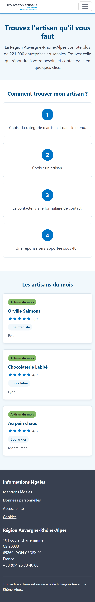
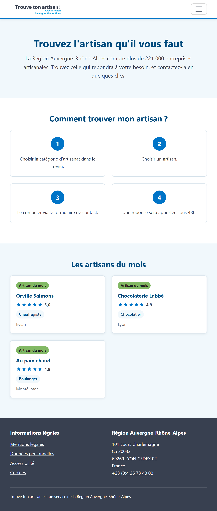
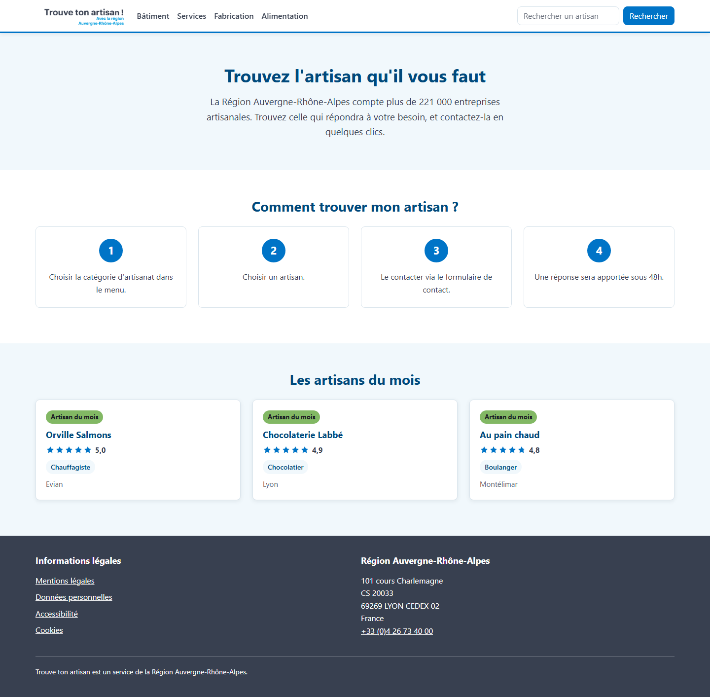
Le menu horizontal se replie en bouton sur téléphone. Les quatre étapes passent d'une colonne à quatre, et les artisans du mois d'une carte par ligne à trois.
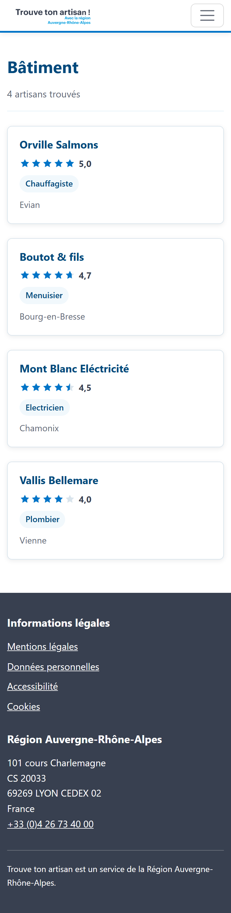
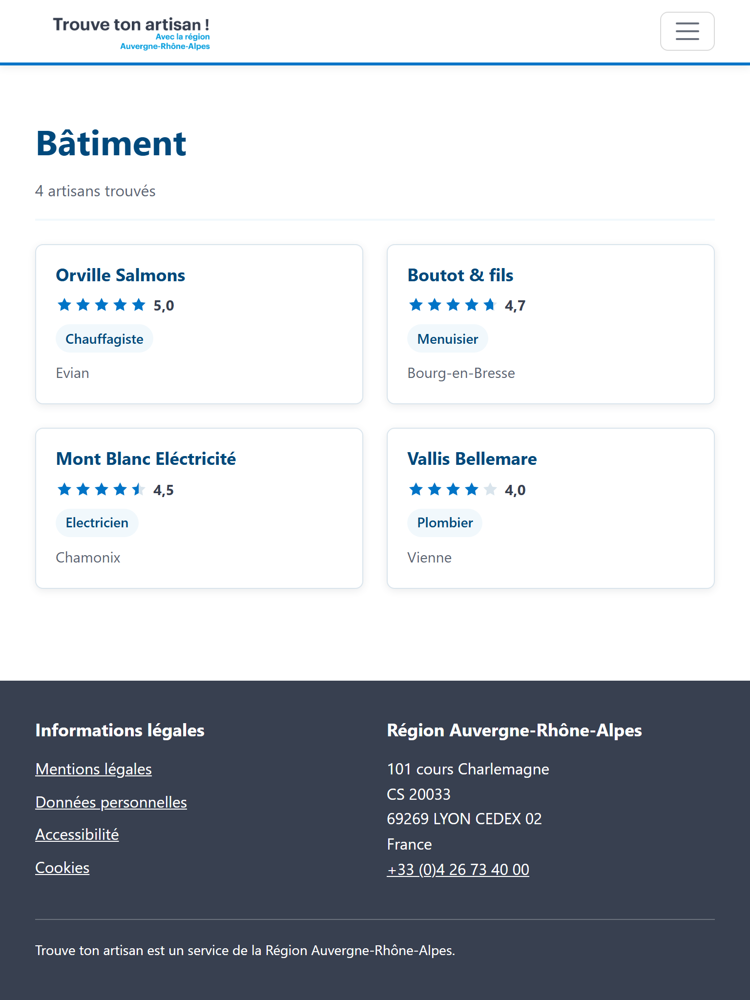
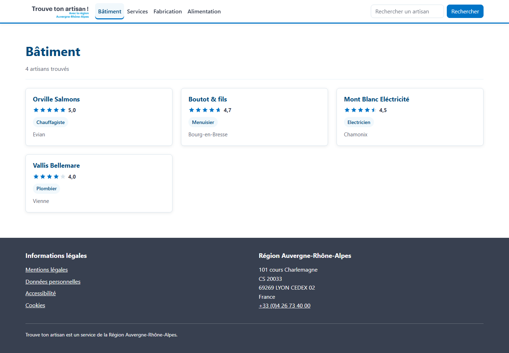
Chaque carte porte le nom, la note sur cinq en étoiles, la spécialité et la localisation. Elle est cliquable sur toute sa surface et mène à la fiche complète.
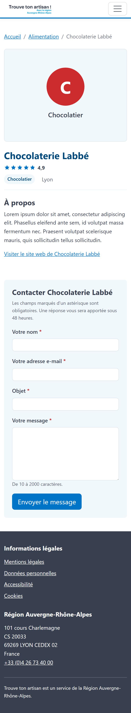
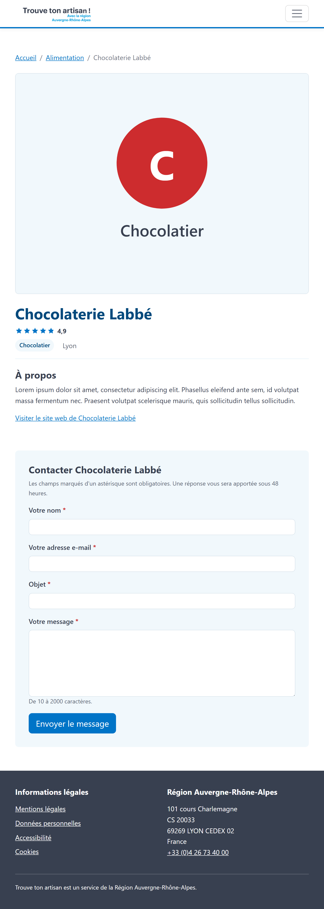
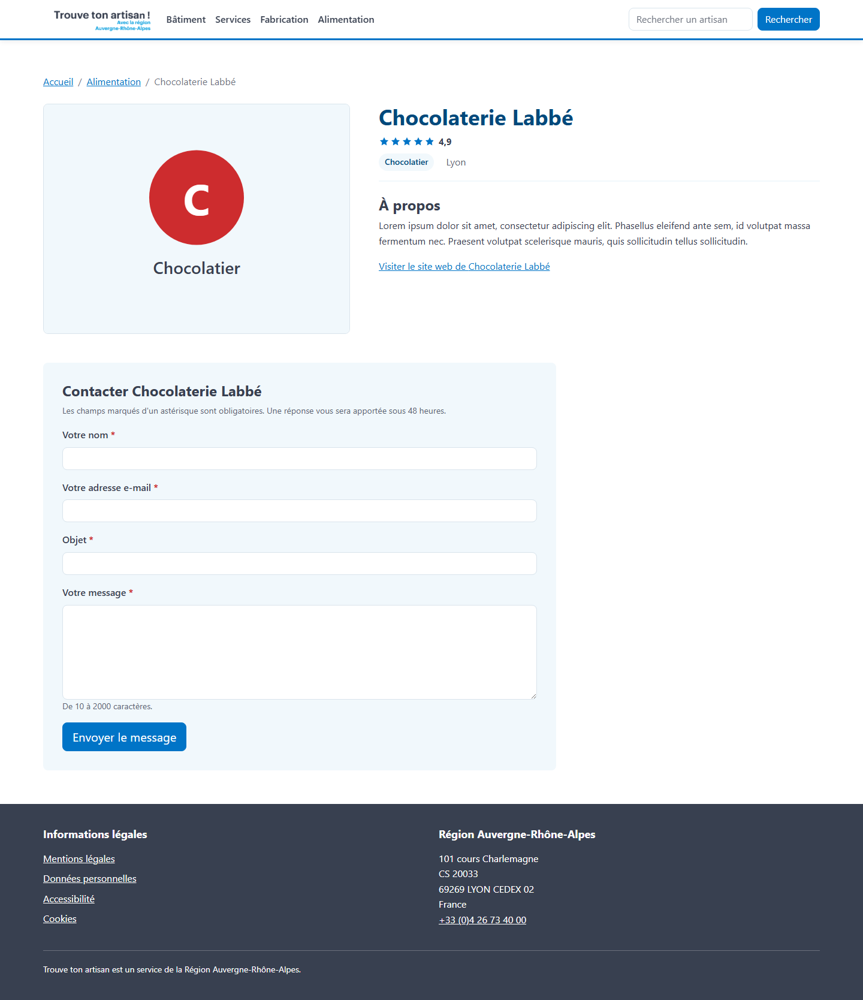
Visuel, note, spécialité, localisation, rubrique « À propos », lien vers le site de l'artisan lorsqu'il existe, et formulaire de contact.
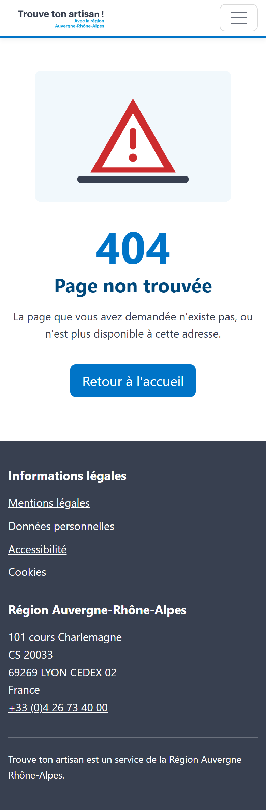
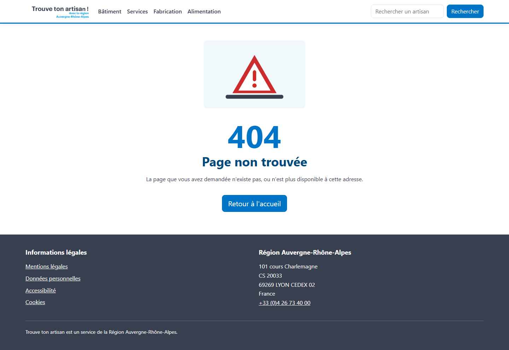
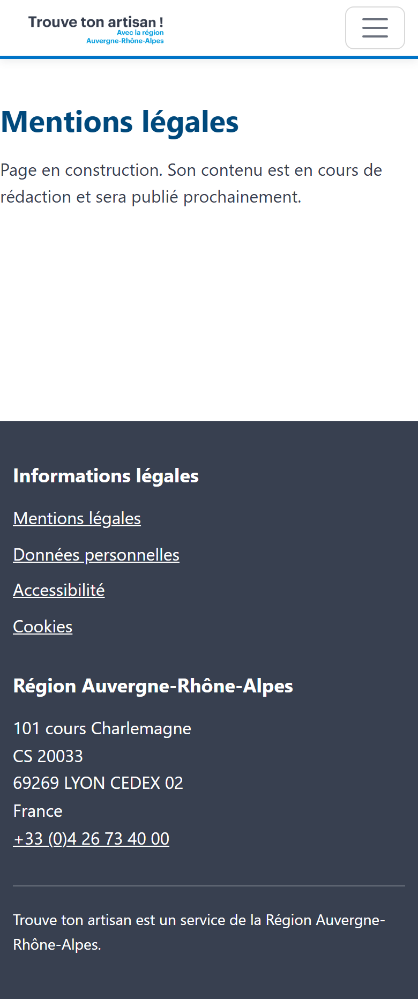
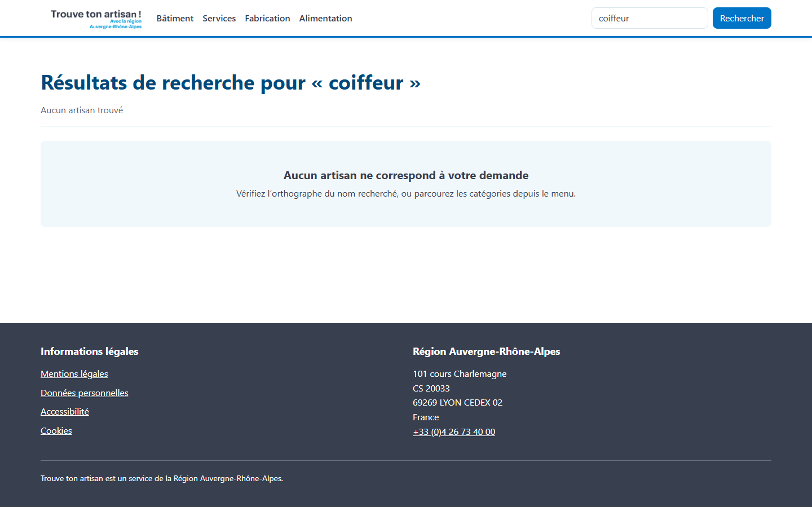
Les quatre pages légales partagent un gabarit commun : en-tête, pied de page et un texte d'attente, leur contenu devant être rédigé ultérieurement par un cabinet spécialisé.
Maquettes Figma : lien à insérer.
Les règles issues du cahier des charges structurent l'ensemble du modèle. Elles ont été formulées explicitement avant toute modélisation.
| Code | Règle |
|---|---|
| RG1 | Un artisan apparaît dans une seule spécialité. |
| RG2 | Une spécialité est rattachée à une seule catégorie. |
| RG3 | Une catégorie regroupe plusieurs spécialités. |
| RG4 | Une spécialité peut être exercée par plusieurs artisans. |
| RG5 | La note d'un artisan est comprise entre 0 et 5, avec une décimale. |
| RG6 | Un artisan peut ne pas disposer de site web. |
| RG7 | Un artisan peut être mis en avant comme artisan du mois. |
| Entité | Propriété | Type | Contraintes | Description |
|---|---|---|---|---|
| Categorie | id_categorie | TINYINT UNSIGNED | Clé primaire | Identifiant |
| Categorie | nom | VARCHAR(50) | Non nul, unique | Libellé du menu |
| Specialite | id_specialite | SMALLINT UNSIGNED | Clé primaire | Identifiant |
| Specialite | nom | VARCHAR(50) | Non nul, unique | Libellé du métier |
| Specialite | id_categorie | TINYINT UNSIGNED | Clé étrangère | Catégorie de rattachement |
| Artisan | id_artisan | SMALLINT UNSIGNED | Clé primaire | Identifiant |
| Artisan | nom | VARCHAR(100) | Non nul, indexé | Nom de l'artisan ou de l'entreprise |
| Artisan | note | DECIMAL(2,1) | Non nul, entre 0 et 5 | Note sur cinq |
| Artisan | ville | VARCHAR(100) | Non nul | Localisation |
| Artisan | a_propos | TEXT | Nullable | Présentation |
| Artisan | VARCHAR(255) | Non nul | Destinataire du formulaire | |
| Artisan | site_web | VARCHAR(255) | Nullable | Site de l'artisan |
| Artisan | image | VARCHAR(255) | Nullable | Visuel de la fiche |
| Artisan | artisan_du_mois | BOOLEAN | Non nul, défaut faux | Mise en avant sur l'accueil |
| Artisan | id_specialite | SMALLINT UNSIGNED | Clé étrangère | Spécialité exercée |
Le fichier client recense les données à stocker pour chaque artisan. Deux ajustements ont été nécessaires, et sont assumés comme tels :
image ne figure pas dans le fichier, alors
que le cahier des charges impose une image sur la fiche artisan. Elle a donc été
ajoutée en nullable. Tant qu'elle reste vide, l'interface affiche une illustration
générée aux couleurs de la catégorie, reprenant l'initiale de l'artisan et le nom de
sa spécialité. La colonne est prête pour les photos réelles que fournira
l'application d'alimentation prévue par le client.
artisan_du_mois correspond à la colonne
« Top » du fichier. Elle a été renommée pour être auto-documentée : un développeur
qui reprend le projet comprend son rôle sans consulter la documentation.
Formalisme Merise, avec les cardinalités déduites des règles de gestion :
┌──────────────────────┐
│ CATEGORIE │
├──────────────────────┤
│ id_categorie │
│ nom │
└──────────┬───────────┘
│ 1,n
╱────┴─────╲
╱ APPARTENIR ╲
╲──────────╱
│ 1,1
┌──────────┴───────────┐
│ SPECIALITE │
├──────────────────────┤
│ id_specialite │
│ nom │
└──────────┬───────────┘
│ 1,n
╱────┴─────╲
╱ EXERCER ╲
╲──────────╱
│ 1,1
┌──────────┴───────────┐
│ ARTISAN │
├──────────────────────┤
│ id_artisan │
│ nom │
│ note │
│ ville │
│ a_propos │
│ email │
│ site_web │
│ image │
│ artisan_du_mois │
└──────────────────────┘
Lecture des cardinalités :
Les deux associations sont de type 1:N. Le modèle ne comporte aucune association N:N, aucune table de liaison n'est donc nécessaire.
Le passage du conceptuel au logique applique la règle des associations 1:N : la clé primaire du côté « 1 » migre dans la table du côté « n », où elle devient clé étrangère.
CATEGORIE (id_categorie, nom) SPECIALITE (id_specialite, nom, #id_categorie) #id_categorie → CATEGORIE.id_categorie ARTISAN (id_artisan, nom, note, ville, a_propos, email, site_web, image, artisan_du_mois, #id_specialite) #id_specialite → SPECIALITE.id_specialite
Les clés primaires sont soulignées, les clés étrangères précédées d'un dièse.
Le modèle physique est le script database/01-create-database.sql. Chaque
choix répond à un besoin précis :
| Choix | Justification |
|---|---|
| Moteur InnoDB | Seul moteur MySQL et MariaDB à gérer réellement les clés étrangères et les transactions. MyISAM accepterait la syntaxe des clés étrangères sans jamais les appliquer. |
| Jeu de caractères utf8mb4, interclassement unicode_ci | Gère les accents et les caractères spéciaux. L'interclassement rend les comparaisons insensibles à la casse et aux accents : une recherche sur « labbe » retrouve « Labbé ». |
DECIMAL(2,1) pour la note |
Évite les erreurs d'arrondi du flottant sur une valeur affichée telle quelle à l'utilisateur. |
CHECK (note >= 0 AND note <= 5) |
Applique la règle RG5 au niveau du SGBD. La contrainte tient même si les données entrent par une autre voie que l'application, ce qui sera le cas avec l'application d'alimentation prévue. |
ON DELETE RESTRICT |
Interdit la suppression d'une catégorie ou d'une spécialité encore utilisée. Empêche l'apparition d'enregistrements orphelins. |
Index sur nom, les clés étrangères et artisan_du_mois |
Couvre exactement les trois requêtes du site : recherche par nom, filtrage par catégorie, artisans du mois. |
| Types entiers dimensionnés au plus juste | TINYINT pour quatre catégories, SMALLINT pour les spécialités et les artisans : moins d'espace occupé sur le disque et dans les index. |
Le script database/02-seed-database.sql insère les données du client,
puis exécute quatre requêtes de contrôle dont les résultats attendus sont documentés
en commentaire. Les scripts ont été exécutés sur MariaDB 10.4 :
| Contrôle | Résultat attendu | Résultat obtenu |
|---|---|---|
| Comptage des lignes | 4 catégories, 15 spécialités, 17 artisans | Conforme |
| Artisans du mois | 3 : Au pain chaud, Chocolaterie Labbé, Orville Salmons | Conforme |
| Répartition par catégorie | Alimentation 4, Bâtiment 4, Fabrication 3, Services 6 | Conforme |
| Notes hors des bornes [0 ; 5] | Aucune ligne | Conforme |
Les deux scripts sont rejouables : le premier recrée la base, le second vide les tables avant insertion. Une exécution répétée ne produit ni doublon ni erreur.
La sécurité étant présentée comme « un point important pour les collectivités », elle a été traitée à chaque couche du projet plutôt qu'ajoutée à la fin. Chaque mesure est présentée ci-dessous avec sa mise en œuvre concrète et l'attaque qu'elle écarte.
Mise en œuvre. Le script de création ajoute un compte
tta_app qui ne reçoit que le droit SELECT sur les trois
tables. L'API se connecte avec ce compte, jamais avec root, dont les
identifiants n'apparaissent nulle part dans le projet.
Intérêt. C'est l'application du principe du moindre privilège. Le
site est en lecture seule par nature : rien ne justifie que son compte puisse écrire.
Si une faille permettait malgré tout d'exécuter du SQL arbitraire, l'attaquant ne
pourrait ni modifier ni supprimer les données, ni détruire une table. Le contrôle a
été vérifié : une requête UPDATE lancée avec ce compte est rejetée
(ER_TABLEACCESS_DENIED_ERROR).
Mise en œuvre. Tous les accès passent par Sequelize, qui transmet
les valeurs en paramètres liés. Aucune chaîne SQL n'est construite par concaténation.
L'option multipleStatements: false interdit en outre au pilote
d'exécuter plusieurs requêtes dans un même appel.
Intérêt. C'est la protection de référence contre l'injection SQL, première entrée du Top 10 de l'OWASP pendant des années. Une valeur transmise en paramètre est traitée comme une donnée et jamais comme du code, quelle que soit son contenu. L'interdiction des requêtes multiples ferme la variante dite « en chaîne », où l'attaquant ajoute une seconde instruction après un point-virgule.
Mise en œuvre. Le terme saisi dans la barre de recherche alimente
une clause LIKE. Les caractères %, _ et
\ y sont échappés avant construction du motif.
Intérêt. Sans cet échappement, une recherche sur %
retournerait la totalité de la table : ce n'est pas une injection SQL, mais bien une
extraction complète des données par un moyen légitime. C'est le type de détail qui
échappe aux protections génériques.
Mise en œuvre. Chaque requête doit présenter la clé dans l'en-tête
x-api-key. La vérification est montée une seule fois, au niveau du
routeur : une route ajoutée plus tard est protégée d'office. La comparaison n'utilise
pas l'opérateur d'égalité mais timingSafeEqual sur les empreintes
SHA-256 des deux valeurs.
Intérêt. La clé répond à l'exigence du cahier des charges de limiter l'accès à l'application. La comparaison en temps constant écarte les attaques temporelles : une comparaison classique s'arrête au premier caractère différent, et la durée de réponse renseigne alors un attaquant sur le nombre de caractères déjà corrects, ce qui permet de reconstituer la clé caractère par caractère. Le passage par une empreinte garantit par ailleurs deux tampons de longueur identique, condition exigée par la fonction.
Mise en œuvre. Seules les origines déclarées dans la variable
d'environnement CORS_ORIGIN sont acceptées, et seules les méthodes
GET et POST sont autorisées.
Intérêt. Un site tiers ne peut pas appeler l'API depuis le navigateur d'un visiteur pour exploiter sa session ou moissonner les données en se présentant sous son identité. Limiter les méthodes réduit d'autant la surface exposée.
Mise en œuvre. Une limitation générale s'applique à toutes les routes, doublée d'une limitation nettement plus stricte sur le formulaire de contact. Les deux seuils sont configurables par variables d'environnement.
Intérêt. Elle freine trois attaques distinctes : la force brute sur la clé d'API, le moissonnage massif du catalogue, et la saturation du service. Sur le formulaire, elle empêche surtout qu'un spammeur ne transforme l'API en relais d'envoi gratuit.
Mise en œuvre. Chaque paramètre est décrit par une règle
express-validator : type, format et longueur. Un intercepteur commun
interrompt la requête en 400 dès qu'une règle échoue, en détaillant le champ fautif.
Aucune valeur non validée n'atteint les contrôleurs.
Intérêt. Le contrôle appliqué par le navigateur est un confort d'usage, jamais une sécurité : il suffit d'envoyer la requête directement pour le contourner. La validation côté serveur est la seule qui compte. Exiger un entier pour un identifiant écarte à elle seule toutes les valeurs exotiques, et le plafonnement des longueurs évite qu'un champ ne serve à saturer la mémoire ou le stockage.
Mise en œuvre. La colonne email est exclue par défaut
de toutes les réponses de l'API, au niveau du modèle. Seul le contrôleur du
formulaire lève cette restriction, le temps de connaître le destinataire du message
côté serveur.
Intérêt. Une adresse publiée dans une réponse JSON est moissonnée en quelques heures par les robots de collecte. Le visiteur écrit à l'API, qui écrit à l'artisan : à aucun moment l'adresse ne transite par le navigateur. Le choix d'exclure la colonne par défaut, plutôt que de la retirer réponse par réponse, garantit qu'un futur point d'entrée ne la divulguera pas par oubli.
Mise en œuvre. Les retours à la ligne sont retirés de l'objet et du nom de l'expéditeur avant construction du message.
Intérêt. Un objet contenant un retour à la ligne suivi de
Bcc: victime@exemple.fr ajouterait un en-tête au message. Le formulaire
deviendrait un relais de spam anonyme, envoyé depuis un serveur légitime, ce qui
exposerait le domaine de la Région à un blocage.
Mise en œuvre. Tout contenu saisi est échappé avant insertion dans le corps HTML du message envoyé à l'artisan.
Intérêt. Sans cette précaution, un visiteur pourrait injecter du HTML dans un message reçu par un tiers : lien maquillé, faux formulaire, image de traçage. Le destinataire est ici une victime potentielle qu'il faut protéger au même titre que l'utilisateur du site.
Mise en œuvre. Le formulaire comporte un champ supplémentaire, retiré de l'affichage, du parcours clavier et de l'arbre d'accessibilité. Un humain ne peut pas le remplir. Lorsqu'il l'est, le serveur répond un succès sans envoyer quoi que ce soit.
Intérêt. Il écarte les robots de spam sans imposer de CAPTCHA, dont le cahier des charges d'accessibilité s'accommoderait mal. Le faux succès est délibéré : répondre « champ interdit » apprendrait au robot quel champ laisser vide au prochain passage.
Mise en œuvre. Quand la variable MAIL_REDIRECT_TO est
renseignée, tous les messages y sont envoyés au lieu de partir vers l'adresse de
l'artisan, et le corps du message rappelle le destinataire réel.
Intérêt. Les adresses du jeu d'essai sont fictives et pourraient appartenir à des personnes réelles. Envoyer des messages de test à des inconnus serait à la fois inutile et contraire au respect des personnes. La fonctionnalité reste pleinement démontrable.
Mise en œuvre. Le module Helmet est monté en tout premier, avant toute logique métier.
Intérêt. Il pose une douzaine d'en-têtes, dont trois jouent un rôle
direct ici : X-Content-Type-Options: nosniff interdit au navigateur de
deviner le type d'un contenu, ce qui empêche de faire exécuter un fichier déguisé ;
X-Frame-Options interdit l'insertion du site dans une iframe et donc le
clickjacking, où un visiteur croit cliquer sur un élément alors qu'il en actionne un
autre ; Strict-Transport-Security impose HTTPS pour les visites
suivantes, ce qui coupe les tentatives de rétrogradation vers HTTP.
Mise en œuvre. L'en-tête X-Powered-By: Express est
désactivé.
Intérêt. Annoncer sa pile technique facilite le travail de reconnaissance d'un attaquant, qui n'a plus qu'à chercher les failles connues de la version en question. Ce n'est pas une protection en soi, mais un renseignement gratuit qu'il est inutile d'offrir.
Mise en œuvre. Le corps des requêtes JSON est limité à 10 kilooctets.
Intérêt. Le formulaire le plus lourd du site pèse moins de trois kilooctets. Au-delà, il s'agit d'une tentative de saturation de la mémoire du serveur, forme simple de déni de service.
Mise en œuvre. Toutes les erreurs aboutissent à un intercepteur unique. Les erreurs de Sequelize y sont converties en un message neutre, et la pile d'appels n'est jointe qu'en développement. Le détail technique part dans les journaux du serveur.
Intérêt. Un message d'erreur brut de la base révèle les noms des tables et des colonnes, parfois la requête elle-même : c'est une carte du système offerte à l'attaquant. Le développeur conserve l'information là où elle lui est utile, dans les journaux, sans la publier.
Mise en œuvre. Aucun identifiant n'apparaît dans le code. Tout passe
par des variables d'environnement, et les fichiers .env sont exclus du
dépôt. Seuls les modèles .env.example, sans valeur, sont publiés. Les
variables indispensables sont vérifiées au démarrage : l'API refuse de se lancer si
l'une manque.
Intérêt. Un secret publié dans un dépôt le reste : même supprimé, il demeure dans l'historique Git, et les robots qui scrutent les dépôts publics le relèvent en quelques minutes. La vérification au démarrage évite par ailleurs de faire tourner un service à moitié configuré, situation propice aux comportements imprévus.
Les protections ont été éprouvées et non seulement écrites. Une série de 31 contrôles automatisés couvre le fonctionnement et la sécurité de l'API. Les résultats obtenus :
| Contrôle | Attendu | Obtenu |
|---|---|---|
| Requête sans clé d'API | Refus 401 | Conforme |
| Requête avec une clé erronée | Refus 401 | Conforme |
| Injection SQL dans la recherche | Traitée comme du texte, aucun résultat, aucune erreur serveur | Conforme |
| Injection dans un identifiant | Rejet 400 | Conforme |
Recherche sur le joker % | Aucun résultat | Conforme |
| Adresse e-mail dans les réponses | Aucune | Conforme |
En-tête X-Powered-By | Absent | Conforme |
| En-têtes de sécurité | Présents | Conforme |
| Écriture avec le compte applicatif | Refusée par MySQL | Conforme |
| Champ piège rempli | Faux succès, aucun envoi | Conforme |
31 contrôles exécutés, 31 conformes.
La veille n'a pas été menée en une fois à la fin du projet, mais à chaque ajout de dépendance et avant la livraison.
| Source | Usage | Fréquence |
|---|---|---|
| GitHub Advisory Database | Base de référence des failles des paquets npm, consultée pour chaque alerte | À chaque alerte |
npm audit | Analyse automatique de l'arbre des dépendances | À chaque installation |
| OWASP Top 10 | Grille de relecture du code | À chaque fonctionnalité |
| MDN Web Docs | Comportement réel des en-têtes HTTP et de CORS | Ponctuel |
| Bulletins du CERT-FR (ANSSI) | Alertes générales sur l'écosystème Node.js | Hebdomadaire |
Principe retenu. Une alerte n'est jamais traitée mécaniquement. Chaque vulnérabilité est lue dans son avis d'origine, puis confrontée à l'usage qu'en fait réellement le projet. C'est précisément ce qui a évité d'appliquer un correctif beaucoup plus dangereux que la faille elle-même.
| Référence | GHSA-qwww-vcr4-c8h2 |
|---|---|
| Paquet | react-router 7.12.0 à 8.2.0, via react-router-dom |
| Gravité | Élevée |
| Détection | npm audit, à l'installation du routeur |
Nature de la faille. En mode RSC (React Server Components), une requête d'action est exécutée par le serveur avant que le contrôle d'origine ne la rejette avec un code 400. La protection contre le CSRF intervient donc trop tard : l'action a déjà produit ses effets.
Analyse de l'exposition. Le projet utilise React Router en mode application à page unique, avec un rendu entièrement côté navigateur. Il n'y a ni React Server Components, ni actions serveur, ni rendu côté serveur. Le code vulnérable n'est jamais exécuté : l'application n'est pas exposée.
Le piège du correctif automatique. La commande
npm audit fix --force proposait de revenir à la version 7.11.0. Cette
version a été installée puis auditée pour vérification. Résultat : quatorze
vulnérabilités de gravité élevée, parmi lesquelles une exécution de code à distance
non authentifiée, plusieurs XSS stockées ou par redirection ouverte, et deux dénis de
service non authentifiés.
Le correctif recommandé par l'outil aurait remplacé une faille inexploitable dans notre contexte par quatorze failles réellement exploitables sur une application de ce type.
Décision. Conserver la version 7.18.2, la plus récente, qui corrige les quatorze failles précédentes et ne laisse subsister que celle du mode RSC, inatteignable ici. Un suivi de l'avis reste à assurer : une version corrigeant ce mode devra être installée dès sa publication.
Enseignement. Le nombre de lignes affichées par un audit ne mesure pas le risque réel. Une faille se juge sur trois critères : le code vulnérable est-il présent, est-il atteignable depuis l'extérieur, et le correctif proposé n'introduit-il pas pire.
| Référence | GHSA-w5hq-g745-h8pq |
|---|---|
| Paquet | uuid antérieur à 11.1.1, dépendance indirecte de sequelize |
| Gravité | Modérée |
| Détection | npm audit sur le dossier de l'API |
Nature de la faille. Les fonctions v3, v5
et v6 ne vérifient pas les bornes du tampon qui leur est fourni. Un
tampon trop court entraîne une écriture hors limites.
Analyse de l'exposition. Le projet n'emploie aucun identifiant UUID : les clés primaires sont des entiers auto-incrémentés. Sequelize n'appelle ce paquet que pour ses identifiants internes, sans jamais transmettre de tampon. Le chemin de code vulnérable n'est pas atteint.
Le piège du correctif automatique. Ici encore, la correction
automatique proposait sequelize@3.30.0, soit un retour de trois versions
majeures en arrière, incompatible avec l'ensemble du code de l'API.
Correction appliquée. Plutôt que de toucher à Sequelize, la
dépendance indirecte a été forcée vers une version corrigée au moyen du mécanisme
overrides de npm :
"overrides": {
"uuid": "^11.1.1"
}
Vérification. Après réinstallation, npm ls uuid confirme
la résolution vers la version 11.1.1, npm audit ne remonte plus aucune
vulnérabilité sur l'API, et les 31 contrôles automatisés passent toujours : la montée
de version n'a rien cassé.
| Périmètre | Vulnérabilités connues | Détail |
|---|---|---|
| API | 0 | uuid corrigé par overrides |
| Front | 2, élevées | Uniquement GHSA-qwww-vcr4-c8h2, code non atteignable en mode application à page unique, aucune version corrigée disponible à ce jour |
Le cahier des charges demande que l'accès à l'API soit limité à l'application. La clé d'API répond à cette exigence, mais il faut être lucide sur sa portée réelle : une clé embarquée dans une application front est lisible. N'importe quel visiteur peut la relever dans l'onglet réseau de son navigateur. Elle écarte les appels opportunistes et le moissonnage automatisé, mais ne constitue pas un secret au sens cryptographique.
La restriction repose donc sur un ensemble de mesures :
Garder un secret réellement secret supposerait un composant serveur intermédiaire ou une authentification par jeton à durée de vie courte. Ce serait la piste à retenir si la plateforme venait à exposer des données personnelles, ce qui n'est pas le cas ici : toutes les données servies sont publiques par nature.
Le cahier des charges impose la conformité à la norme WCAG 2.1 et le passage du code dans les vérificateurs du W3C. Les points suivants ont été mis en place, puis contrôlés sur le rendu réel.
| Critère WCAG | Mise en œuvre |
|---|---|
| 1.3.1 Information et relations | Structure sémantique complète (header, nav, main, footer, listes). Le niveau des titres des cartes s'adapte à la page pour ne jamais sauter de niveau. |
| 1.4.1 Utilisation de la couleur | La catégorie active est signalée par un soulignement épais en plus de la couleur. La note est écrite en chiffres à côté des étoiles. |
| 1.4.3 Contraste minimal | Contrastes mesurés sur le rendu. Le badge « artisan du mois » atteignait 4,46:1, sous le seuil de 4,5:1 : la nuance du texte a été assombrie pour le porter à 7,2:1. |
| 1.4.4 Redimensionnement du texte | Tailles en unités relatives, zoom du navigateur non bloqué. |
| 2.1.1 Clavier | Toutes les fonctions sont accessibles au clavier. Ordre de tabulation vérifié : lien d'évitement, logo, catégories, recherche, contenu, pied de page. |
| 2.4.1 Contournement de blocs | Lien d'évitement en premier élément focusable. Il est resté volontairement atteignable au chargement : le focus n'est déplacé qu'aux changements de page suivants. |
| 2.4.7 Visibilité du focus | Contour de focus épais et contrasté sur tous les éléments interactifs, affiché uniquement lors d'une navigation au clavier. |
| 2.3.3 Animations | Le réglage système de réduction des animations est respecté. |
| 3.1.1 Langue de la page | Attribut lang="fr" sur le document. |
| 3.3.1 et 3.3.2 Erreurs et étiquettes | Chaque champ porte une étiquette, les champs obligatoires sont signalés autrement que par la seule couleur, et les erreurs sont affichées sous le champ concerné, dans une région annoncée aux lecteurs d'écran. |
| 4.1.2 Nom, rôle, valeur | Le bouton du menu mobile annonce son état, les cartes portent un libellé complet, les images décoratives sont masquées aux technologies d'assistance. |
Le site étant une application à page unique, le code envoyé par le serveur ne représente pas ce que voit l'internaute. C'est donc le HTML effectivement rendu dans le navigateur qui a été soumis au validateur, page par page.
| Page validée | Erreurs |
|---|---|
| Accueil | 0 |
| Liste d'une catégorie | 0 |
| Fiche artisan | 0 |
| Page 404 | 0 |
| Page légale | 0 |
Deux erreurs avaient été relevées lors du premier passage, puis corrigées : React 19
ajoutait ses balises de titre et de description sans supprimer celles du document, ce
qui produisait des doublons interdits. Les métadonnées sont désormais mises à jour
directement dans l'en-tête du document. Une troisième erreur, un saut du niveau de
titre h1 vers h3 sur les pages de liste, a été corrigée en
rendant le niveau des titres de cartes adaptable au contexte.
https://github.com/ZacR13-dev/trouve-ton-artisan
Le dépôt contient :
database/01-create-database.sql ;database/02-seed-database.sql ;README.md avec les prérequis, l'installation et le lancement ;docs/.Adresse du site : lien à insérer.
trouve-ton-artisan/ ├── api/ API REST (Express, Sequelize) ├── client/ Application React (Vite, Bootstrap, Sass) ├── database/ Scripts SQL de création et d'alimentation ├── docs/ Documentation, captures, dossier └── README.md Prérequis, installation, lancement
Les instructions complètes figurent dans le fichier README.md à la racine
du dépôt. En résumé : exécuter les deux scripts SQL, renseigner les deux fichiers
.env à partir des modèles fournis, puis lancer l'API et le front.